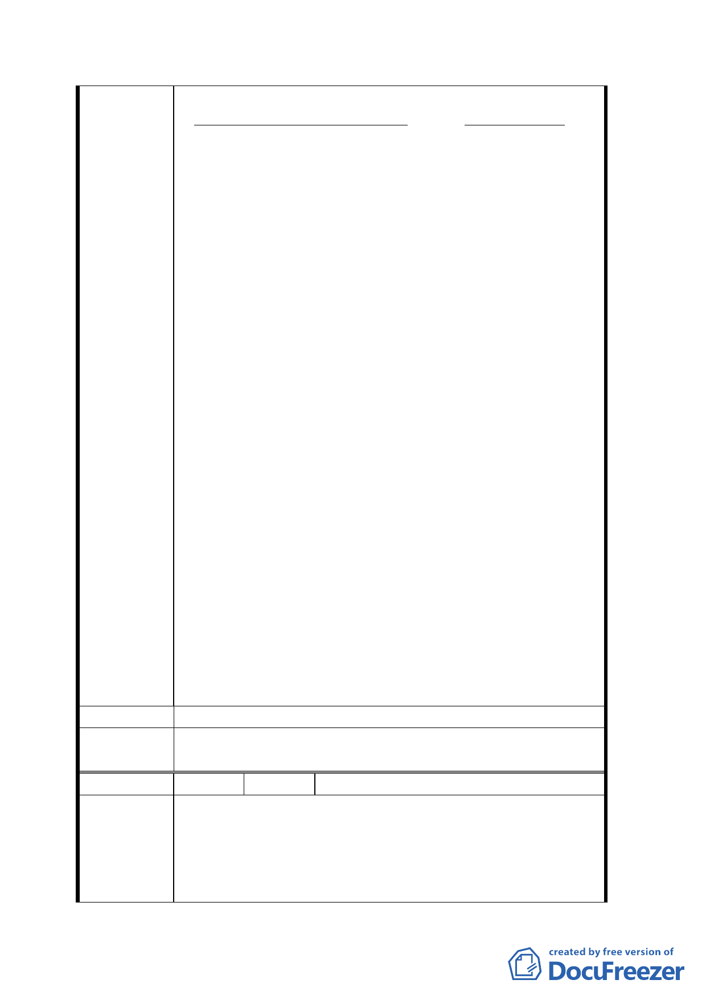

建築物基地上：
査詢事項
事實情况
1.有無居民設立戸籍之記録
早已有設立戸籍
2.有無自來水供水給該地帯居民之記録 自民國九年初已有供水
3.有無供電給該地帯居民用電之記録
早已有供電
4.上述地帯是否日政時期至光復後次年
改稱前之若竹町一丁目二番地及二番地之一
是
如有人設立戸籍，有自來水供水，或有供電給居民
用電，當然已有建築房屋，也有人居住。其足資證
明已有建築物供人居住生活之事實。換言之，其已
完全符合國有財産法第 52-2 條之要件“已供建
築、居住使用至今”。
國有財産法第 52-2 條由原來三年経修正延長至民
國一百零四年一月十三日前，是中央政府対人民之
関懐及寛容対待人民而為。従寛補救亦完全符合中
央政策。本案可在短短十天之内辧完，対政府不致
有任何支出或経費負担，対僅有之十二處完全合法
建築物所有権人，可達成所請如願，双全其美。
該僅有之十二處完全合法建築物之合法性，所具法
律條件及其他情形完全相同。無不可將全部十二處
合法建築物視為一案而統合辧理以求簡化之理由。
更不必勞煩毎一所有権人個別向上列政府機関分別
申請取得證明文件之需。直接由國有財産局或市府
直接分別以簡函致：台北市萬華區戸政事務所、台
北市自來水事業處、台湾電力公司、台北區營業處，
立即可獲所詢之答。如由民間為之，不但難如昇天，
而未必能易獲所詢之答。官民有差，古今中外仍然
存在。小小便民有時対人民可有相當之實体帮助。
建 議 辦 法 同陳情理由。
委員會決
議
同決議一、二。
編 號 18 陳情人 劉瑞貞、劉銘玉、陳永政
陳情位置：西寧南路 261 至 263 號（漢中段二小段
138、138-1、139、137、137-0001、132、133 地號）
陳 情 理 由 1. 臨西寧南路 261-263 號自民國 35 年前即存在於
該土地上，且符合國財法第 52 調之 2 條件。
2. 又臨台北市貴陽街上近西寧南路口之房屋已逾
二四